LINE 廠商對接 現況與待答
更新於 2026-09-12 這一頁不放任何一則訊息的文字，只放四件事：
現在有哪幾則在跑、廠商改了什麼、對方的回覆涵蓋到哪裡、還沒有答案的是什麼。
- 浮水印的大小與位置和我們的規格不一樣：量出來是規格的五到六成，而且它跑出卡片的右下角被切掉，我們的 JSON 寫的是完全收在卡內。廠商 09-10 的訊息說「有再微調圖案呈現，提供給您確認看看」，所以這一題現在等我們回覆。
- 新版卡上的年份是 2020，而截圖拍攝日是 2026-09-10。同一批截圖裡的約診查詢顯示的是 2026，所以比較可能是那一筆測試資料，仍需確認。
- 浮水印在九顆之間變換，但同一筆約診在三分鐘內出現兩顆不同的。需確認換的規則。
- 評價邀約那兩顆按鈕連到哪裡還沒有答案，在那之前先不送。
① 這個帳號會自動送出哪幾則12 則．圖是那一則自己的規格頁拍的
已完成6 則
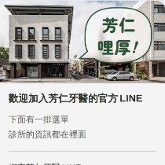
① 招呼圖卡
加好友那一刻／診所後台送・已完成
改字診所自己來
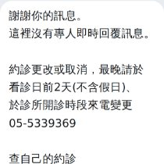
② 自動回應（一律回應）
病人打任何字／診所後台送・已完成
純文字。選它的理由是字留在診所自己手上
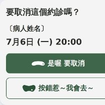
⑨ 取消確認 → 取消成功
他按預約改期／廠商送・已完成
按「否」之後長什麼樣還沒看過
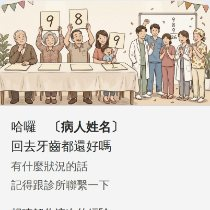
⑩ 評價邀約
看診後／廠商送・已完成
兩顆按鈕連到哪裡還沒有答案，在那之前先不送
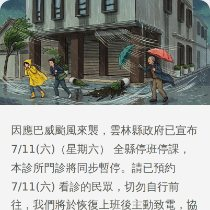
⑪ 颱風／臨時休診
縣府宣布之後／診所後台送・診所自行製作
用診所每次自己打的那一份字
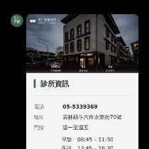
⑫ 圖文選單點下去回的三組卡
他點選單／廠商送・已完成
診所資訊／主題與科別七科／衛教懶人包 12 張
待調整（或是有落差）6 則
③ 「綁定成功」那一句
綁定完成那一刻／病人那一側送・現況・公版
2026-09-12 在自己的帳號上實測：它由病人那一側送出，同一分鐘就觸發了那一則通用的自動回應（見第 ⑥ 節的圖）。不必取代它，在它後面再送一則。
④ 綁定完成卡
③ 之後／廠商送・定稿・等送
和 ② 會不會兩則一起送還沒有答案
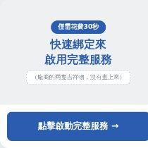
⑤ 還沒綁定就按約診查詢
他按下去那一刻／廠商送・提案中
上：我們新做的那一張（30秒快速綁定）。下：現況那張公版藍色卡，截圖證實已經在跑
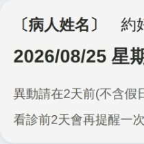
⑥ 預約成功通知
約好當下／廠商送・09-10 改版
六件對上、四件還沒對上（見下一節）
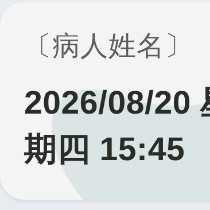
⑦ 約診紀錄查詢
他按查詢／廠商送・09-10 改版
日期是這個帳號裡最長的一種寫法
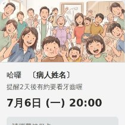
⑧ 看診前 48 小時提醒
看診前 48 小時／廠商送・定稿・等送
圖片的 bug 已經修好了（2026-09-10，另一條對話）：頭圖裡被媽媽抱著的幼兒多出第三隻手。換的是原檔，裁圖、兩張模擬圖、給廠商那一份一起重跑，構圖與版面一個像素都沒動。真截圖那一則是看診前 3 天送的，固不固定還沒有答案
這張表是我們從截圖與往返裡整理出來的。「總共會自動送出哪幾則」的完整清單還沒有拿到，目前有四則（滿意度調查卡、預約成功、約診紀錄查詢、還沒綁定按約診查詢）是從截圖裡發現的 —— 所以那份清單仍是第一順位。
② 廠商 2026-09-10 的改版2026-09-10 廠商把 ⑥⑦ 兩則照我們的規格改了一版。左邊是我們送過去的規格圖，右邊各項是逐項比對的結果。

對上的六件
- 姓名（粗體）＋「約好囉」的寫法
- 日期升成整張卡最大的一塊
- 兩行灰色小字逐字採用
- 頂端那塊 87px 的標誌區拿掉了
- 地址與電話拿掉了
- 浮水印放上去了
廠商送來的畫面
病人姓名在出圖那一步就遮掉了（這個 repo 是公開的），其餘一個像素都沒有動。
{kind=link}
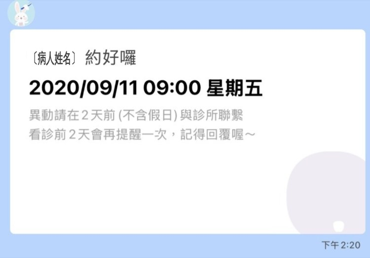
⑥ 預約成功通知（14:20）
{kind=link}
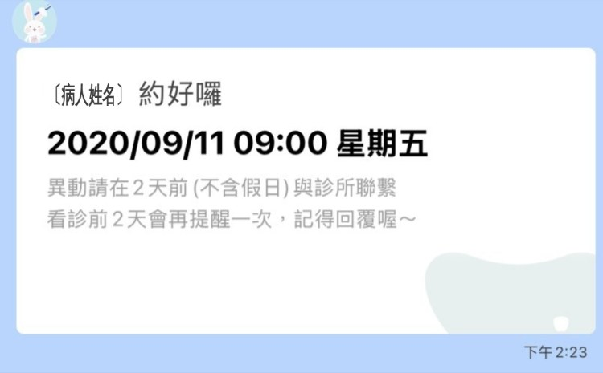
⑥ 同一則，三分鐘後（14:23）
{kind=link}
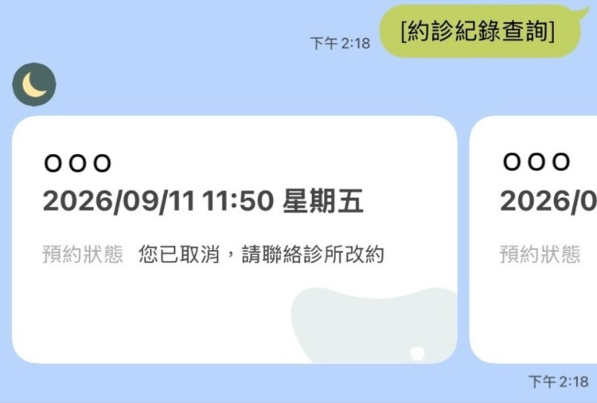
⑦ 約診紀錄查詢（14:18）
還沒對上的四件
卡上年份是 2020
截圖拍攝日是 2026-09-10。若是系統算出來的，每個病人都會收到錯的年份，而這一則是約好的當下就送。
日期格式沒換，但輪播那張沒有被截斷
四張裡有一張就是約診查詢的輪播，日期「2026/09/11 11:50 星期五」完整顯示、沒有截斷。所以 maxLines 這一項看起來已經處理掉了，只差請對方確認一句。
浮水印的大小與位置不一樣
量出來是我們規格的五到六成，而且它跑出卡片的右下角被切掉。我們的 JSON 寫的是「照表上那個 px 寬、完全收在卡內」。數字與圖在下一節。
預約狀態還在
但字從「尚未回覆」換成了「您已取消，請聯絡診所改約」—— 對著病人講、也給了下一步，比原本清楚。所以我們的要求跟著縮小：樂衍後台照舊保留，只問病人自己取消過的那一筆能不能不列在他的查詢清單裡。

③ 浮水印那九顆形狀取自 brand/shapes／寬度與顏色取自 wm-sizes.json
每一格上面是原色（看得出形狀與是哪一科）， 虛線底下是它壓在卡片上真正的濃度（12%，就是那批 PNG 烘進去的 alpha）。 兩張是同一份幾何、同一個相對寬度 —— 九顆的寬度不一樣是刻意的（按墨的面積正規化，看起來才一樣重）。
r1c1・107px
r1c2・150px
r1c3・188px
r2c1・152px
r2c2・120px
r2c3・188px
r3c1・104px
r3c2・106px
r3c3・215px
現況
廠商送來的兩張卡上，浮水印確實是這九顆裡的兩顆，形狀與各自的顏色都對得上（圓形＋紫 ＝ 口腔外科那一顆；寬形＋青綠 ＝ 牙周治療那一顆）。
大小與位置
大小與位置和我們的規格不一樣。量法是拿形狀中間那個牙洞當尺（牙洞占圖寬的比例是固定的），所以圖被切掉也量得出它本來多大。
同一張卡畫三次
同一張卡（268×149）畫三次：我們 JSON 寫的、我們模擬圖畫的、廠商送來的。三格的形狀與顏色完全一樣，差的只有大小與位置。
圓形（口腔外科紫）・預約成功通知
offsetEnd 0px／offsetBottom 0px ＝ 貼齊右下角、完全收在卡內
提案頁那張 PNG 是往右下溢出的 —— 和我們自己的 JSON 不一致，這件事本來就記著
量出來 ＝ 卡寬的 25.1%（規格是 38.8%），而且右下被切掉
寬形（牙周治療青綠）・預約成功通知
同上
同上
＝ 卡寬的 31.1%（規格是 56.0%）
約診查詢那條輪播（卡寬約 207）上的寬形也量過：畫出來 80px ＝ 卡寬的 38.6%，規格是 150px ＝ 72.5%。三張合起來，廠商畫的是我們規格的 53~65%。
是不是平台的限制
問過一次「會不會是 LINE 不讓浮水印大到文字的範圍」。用手上的數字算過，沒有這種限制：① 廠商那三張的浮水印是跑出卡片右下角被切掉的，被上限擋住的話會停在上限、不會跑出畫面；② 一個平台上限會對每一個素材套同一個係數，而這兩顆的係數是 0.644 與 0.553，不一樣。把想得到的上限逐一算過，沒有一種給得出他們那個 1.239（同寬度上限會是 1.000、同高度 2.029、同面積 1.424、我們那張等墨量的表 1.442）。所以那是兩個各自挑的值。
接下來問什麼
問法因此不是「是不是限制」，是「size 你們寫成 px、關鍵字、還是百分比，填了哪一個值」。三種寫法各有一個會讓它變小的機制，三種都在他們那一側、都改得動：關鍵字是一把粗的階梯、填不進 104 或 150；百分比的基準是它的父層 box，父層若是有內距的內容框就會小一截；px 就只是填了別的數字。這三條我們手上都只有轉述、沒有實機驗過，所以回信要寫成問句，同時把要的值講死。
順帶
他們那三張會溢出，等於證明絕對定位的圖可以超出卡片邊界並被裁切 —— 我們自己那張模擬圖的做法在 LINE 上是做得出來的。
還要確認的
同一筆約診（2020/09/11 09:00）在 14:20 是圓形、14:23 是寬形。我們的規格是「(約診月份＋約診日) % 9」，同一筆不管查幾次都是同一顆。要確認現在是在給我們看候選，還是換的規則沒有綁在那一筆約診上。
九顆的形狀、顏色與寬度都從 brand/shapes/ 與 preview/line-booked/wm-sizes.json 讀回來，這一頁不抄第二份。九顆的寬度不一樣是刻意的 —— 按墨的面積正規化，看起來才一樣重。
④ 和廠商的四封往返
2026-09-07 廠商（第一封）
他說列了八項要的東西（圖檔、文字、規格）。
我們交出 /preview/line-spec/ —— 模擬圖、圖檔網址、可以整段複製的文字。
2026-09-07 廠商（第二封）
他說③ 綁定完成訊息為公版，故無法調整。⑤ 背景只能全白或其他顏色，無法放圖示。
我們兩題都改寫成新的問法寫進交付頁。
兩句各自都成立，只是涵蓋的不是我們問的那一點 —— 我們沒有要改那句公版；浮水印要的也不是背景。
2026-09-10 廠商（客戶經理 Sunny）
他說1. 綁定成功訊息沒辦法拿掉（需通知病患、櫃檯可用號碼查資料），它發出時會觸發自動回應，而官方 LINE 無法抓關鍵詞跳不同訊息。2. 約診狀態要留下，因為病患取消後診所要在樂衍上取消才算正式取消。
我們使用者當天回了三點（約診狀態造成誤會、其他商家帳號不是這樣、浮水印效果有差異），對方回問是哪個帳號。
逐句的涵蓋範圍拆在下一節。
2026-09-10 廠商（改版的四張截圖）
他說把 ⑥⑦ 兩則照我們的規格改了一版送來看。
我們逐項比對過：六件對上、四件還沒對上。
這是這條線目前配合度最高的一次，回信要先講這個。
⑤ 對方的回覆涵蓋到哪裡「做不到」一律先改寫成「誰做不到」再往下談
後台送不出 Flex Message
說明的是後台那個編輯介面的型別下拉裡確實沒有 Flex。
還沒回答LINE 平台送得出，換一個人送就行 —— 而他們自己一直在送。
綁定完成訊息為公版，故無法調整
說明的是那句話是病人那一側送出的，內容固定。
還沒回答我們沒有要改它。要問的是能不能在它後面再送一則。
背景只能全白或其他顏色，無法放圖示
說明的是Flex 的 box 確實沒有背景圖。
還沒回答浮水印不是背景，是 image ＋ absolute。而卡片裡放得了圖 —— 他們那張預約成功卡頂端本來就有一顆標誌。
官方 LINE 無法針對抓關鍵詞跳不同訊息，已釘死
說明的是後台的自動回應分不開這一句（關鍵字是完全一致比對，而那句話含著每個人不同的號碼）。
還沒回答這一則不必由後台回。那句話是他們的系統送出來的，他們在那一刻就知道綁定完成，不必比對任何字串。
綁定成功訊息要留著，因為要通知病患
說明的是通知病患確實需要有一則訊息。
還沒回答那件事我們自己那張綁定完成卡就在做。玉山的做法是商家自己送一則、不含號碼。
…也因為櫃檯可以用手機號碼查病患資料
說明的是這件事我們以前不知道：那則訊息同時是櫃檯在聊天室裡查號碼的入口。
還沒回答櫃檯能不能從別的地方看到那個號碼 —— 整件事收斂到這一句，而這一句要先問診所自己。
約診狀態要留下，不然樂衍上的約診會不見
說明的是資料要留在樂衍後台，這一點沒有爭議。
還沒回答使用者要的是病人那一側不要再看到。兩件可以同時成立 —— 後台照舊保留，LINE 的查詢結果不列。
⑥ 綁定完成：兩個方向先是我們自己那一刻的畫面，再是廠商 2026-09-10 的回覆
{kind=link}
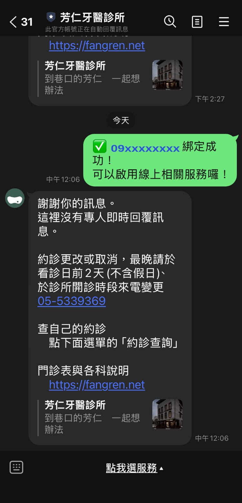
我們自己的帳號，2026-09-12 中午 12:06
看到12:06 病人那一側送出「✅ 09xxxxxxxx 綁定成功！可以啟用線上相關服務囉！」（畫面右邊、綠泡泡）；同一分鐘，帳號回了那一則通用的自動回應，逐字就是已定稿的那一份。聊天室頁首寫著「此官方帳號正在自動回覆訊息」。
說明的是廠商那句「綁定成功訊息發出時會觸發自動回應」在我們自己的帳號上成立，不再只是轉述；而「那一句是以病人的身分送出的」也第一次從病人那一側看到（先前兩張分別是診所端後台與別家診所）。方向二要解的那件事，現在有自己的畫面可以指。
還沒說明的它說明不了那一則歸誰送（兩個方向共同卡住的地方），也說明不了廠商系統那一側有沒有「不要送」的開關。
順帶同一張畫面上另外看得到三件：自動回應尾巴那張連結預覽卡（診所名／到巷口的芳仁 一起想辦法／夜景縮圖）就是首頁那組 og 標籤在 LINE 上長出來的樣子；選單列寫著「點我選服務」＝ 六格那一版還在跑；而「看診日前 2 天 (不含假日)」那一段量到比定稿多出約三分之一個字的空隙 —— 後台那一份可能還是加了半形空格的舊版，打開看一眼就知道（已列進第 ⑧ 節）。
廠商的回覆，與兩個處理方向
{kind=link}
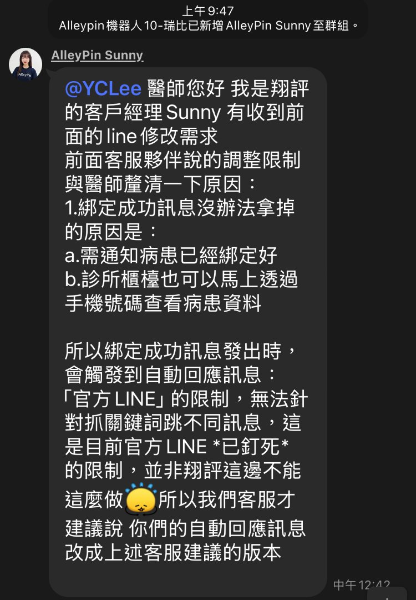
方向一 從源頭不要送那一則
要的是在廠商系統那一側關掉「綁定成功」自動送出。做得到的話，「平常打字進去會收到什麼」就不必再設計。
對方說回覆不能拿掉，理由兩個：a 需通知病患已經綁定好、b 診所櫃檯可以馬上透過手機號碼查看病患資料（原文見上圖）。
現在知道的理由 a 我們自己那張綁定完成卡就在做，玉山的做法也是商家自己送一則、不含號碼。理由 b 是這一輪才知道的新資訊 —— 那一則同時是櫃檯在聊天室裡查號碼的入口。
還沒有答案的櫃檯能不能從別的地方看到那個號碼。這一題要先問診所自己，問到之前方向一談不下去。
別家的畫面BREAD, ESPRESSO & 綁定那一刻病人那一側沒有出現任何訊息 —— 所以「綁定而不送訊息」在 LINE 上成立。它說明不了廠商系統裡有沒有這個開關。
方向二 留著，但讓兩則不一樣
要的是綁定那一刻收到專屬的那一則，平常打字進去收到通用的那一則。
對方說綁定成功訊息發出時會觸發自動回應，而「官方 LINE」無法針對抓關鍵詞跳不同訊息。
現在知道的那一句涵蓋的是後台的自動回應 —— 它是完全一致比對，而那句話含著每個人不同的號碼，抓不到。
還沒有答案的這一則不必由後台回。那句話是他們的系統送出來的，他們在那一刻就知道綁定完成，可以直接在它後面送一則，不必比對任何字串。
別家的畫面潔客幫、中國信託、國泰世華在同一個帳號裡，綁定那一則和平常打字回的那一則就是不一樣的兩則。
別家帳號的三種現象
別家帳號分成三種。附給廠商時一次只附對應那一句的那一張，並寫清楚它對應的是哪一句。
一 綁定那一句之後沒有再跳訊息 新竹品御牙醫
看到同一個廠商、同一套系統。按約診查詢 → 一模一樣那張藍色公版卡 → 病人那一側送出綁定成功那一句 → 後面沒有再出現任何訊息。頁首寫著「此官方帳號正在自動回覆訊息」。
說明的是同一句話在另一間診所沒有接著跳出通用回覆，所以那是設定的差別，不是一條所有人都躲不開的限制。
還沒說明的它是關鍵字模式、還是設了時段。兩種答案都有代價，所以那五分鐘的實測（對它打一句「早安」）要先做。
二 綁定那一則和平常回的那一則不一樣 潔客幫・中國信託・國泰世華・玉山銀行
看到潔客幫 8:10 綁定完成回一則專屬的、9:34 打「早安」回一則通用的；中國信託綁定完成回一張帶四顆按鈕的圖卡；國泰世華同一分鐘內，打別的字回「無法理解」、打「綁定」回帶名字的專屬卡。
說明的是一個帳號裡兩則並存是常見做法，而且回一則通用的 fallback 本來就很常見 —— 我們那一則的存在是對的，問題只在它不該在綁定那一刻跳出來。
還沒說明的那幾則多半是各自的系統送的，或是固定字觸發的，所以它接不上「含號碼的那一句抓不到」那一點。
三 綁定那一刻什麼都沒送 BREAD, ESPRESSO &
看到打三句招呼語都沒有回應 ＝ 沒有開自動回應；而綁定時仍然收到那一家自己的一則。
說明的是綁定不必伴隨一則含號碼的訊息，而且那一則是系統送的、不是後台的自動回應。
還沒說明的那是那一家自己的系統。廠商的系統有沒有同一個開關，只有廠商能答。
兩個方向卡住的地方是同一件事：那句綁定成功歸誰送。改由廠商的系統在綁定當下直接送我們那張卡，理由 a 與方向二同時成立，而且不必比對任何字串。理由 b（櫃檯查號碼）仍然要先問診所自己。
⑦ 別家帳號的畫面圖沒有進 repo，也沒有貼上任何頁面（別人家的畫面）。
新竹品御牙醫 最接近我們的狀況
看到同一個廠商的另一間診所。按約診查詢 → 一模一樣那張藍色公版卡 → 病人那一側送出綁定成功那一句 → 後面沒有再出現任何訊息。它的頁首寫著「此官方帳號正在自動回覆訊息」。
說明的是同一套系統、同一句話，在那一間診所沒有接著跳出通用回覆。所以要問的是他們那邊怎麼設的，不是要求新功能。
玉山銀行 補充
看到綁定完成那一則是商家自己送的，內容不含號碼。另外打「玉山」「早安」「午安」回三則不同，其中「午安」回的是台幣匯款說明。
說明的是通知病患這件事不必靠含號碼的那一句。另外，關鍵字分流會出錯，出錯的樣子就是答非所問。
另外五個帳號
- 潔客幫 8:10 綁定完成回一則專屬的、9:34 打「早安」回一則通用的 —— 兩則在同一個帳號裡並存。（那一則也可能是後台的加入好友歡迎訊息。）
- BREAD, ESPRESSO & 打三句都沒有回應 ＝ 沒有開自動回應，所以綁定後那一則是系統送的。（未認證帳號。）
- 中國信託 綁定完成回一張帶四顆按鈕的 Flex 圖卡，和我們那張同一類。（打四句話回四則不同，但都是固定字。）
- 台北富邦 打三句都回同一張客服卡 —— 回一則通用的 fallback 是常見做法。
- 國泰世華 同一分鐘內，打別的字回「無法理解」、打「綁定」回帶名字的專屬卡。（「綁定」是固定字。）
每一張說明的事情不一樣。分成哪三種、各自說明得了什麼，整理在上一節。
⑧ 還沒有答案的 43 題照「誰能答」分開・★ 是最先要的 11 題
只有廠商能答
28 題・其中 8 題最先要
- ★這個帳號總共會自動送出哪幾則訊息？（一份清單）目前有四則是從截圖裡發現的，所以還不確定有沒有漏掉。
- ★新版卡上的年份是 2020 —— 那是測試資料，還是系統算出來的值？若是系統算的，每個病人都會收到錯的年份。同一批截圖裡的約診查詢顯示 2026，所以比較可能是那一筆測試資料。
- ★同一套系統的新竹品御牙醫，綁定成功那一句之後沒有跳出通用回覆 —— 他們的自動回應是怎麼設的？我們能不能照那個設法？不是要求新功能，是問他們手上已經有的設定。
- ★評價邀約那兩顆按鈕分別連到哪裡？若只有「願意」那一顆通向公開評論，那是 review gating。答案出來之前那一則不送。
- ★合約包了什麼：改一則訊息算不算服務範圍內？有沒有次數限制？沒有這個資訊，就不知道該用要求的還是商量的。這一題還沒問過。
- ★浮水印的 size 你們是寫成 px、關鍵字、還是百分比？填的是哪一個值？我們要的是：size 用 px（圓形 104px、寬形 150px）、offsetEnd 與 offsetBottom 都是 0px。現在畫出來是規格的五到六成，而且右下被切掉。算過不是平台的上限（兩顆的縮小係數不一樣），所以是填的值。我們自己的模擬圖是往右下溢出 18／10px 的，和我們自己的 JSON 不一致 —— 要先決定給哪一種再回信。
- ★綁定完成那一則現在是誰回的？改由你們的系統在綁定當下送我們那張卡可不可以？後台的自動回應同時開著會不會兩則一起送？最後那一題會動到已定稿的自動回應（選純文字的理由是字留在自己手上）—— 那是使用者的決定。
- ★若診所櫃檯用不到聊天室那句訊息裡的號碼，系統那一側關不關得掉「綁定成功」自動送出？方向一真正的問法。對方回過的是「不能拿掉」與兩個理由，其中一個理由要先由診所自己確認。
其餘 20 題
- ・約診查詢那張卡的日期，maxLines 是不是拿掉了？（送來的輪播截圖上「2026/09/11 11:50 星期五」完整顯示，看起來已經處理掉了，請確認一句。）全線唯一一件現在就在出錯的事，看起來已經好了。要修的是 wrap，換短格式只是多買一層餘裕。
- ・浮水印換的規則是什麼？請改成「(約診月份＋約診日) % 9」——同一筆約診不管查幾次都是同一顆，預約成功與查詢清單裡那一張也要同一顆同一色。同一筆約診（2020/09/11）14:20 是圓形、14:23 變寬形。若不是在給我們看候選，就是輪替沒有綁在那一筆上。
- ・浮水印用 position: absolute 疊在文字後面，實機上會不會蓋到字？這一項從來沒有實機驗過；09-10 那四張的右下角剛好沒有字。蓋到就退回「右邊一顆不重疊」。
- ・日期可不可以換成「9月11日 (五) 09:00」（去年份、月日中文、括號維持半形）？
- ・病人自己按過取消的那一筆，能不能不要列在他的 LINE 查詢清單裡？（樂衍後台照舊保留）
- ・「預約狀態」總共有幾種值、各是什麼意思？和提醒卡那顆確認鈕是不是同一個欄位？
- ・24 小時沒回應自動取消：計時會不會跳過休診日？被自動取消時會不會通知病人？
- ・提醒卡是不是固定 48 小時前送？（真截圖那一則是 3 天前）
- ・「預約改期」那顆按鈕的字改不改得動？（它只取消）
- ・取消確認那兩顆按鈕的順序可不可以調？（把「不取消」排前面）
- ・期限外那一種可不可以直接回電話那一則，不要先問一次？
- ・颱風休診那天，系統裡那些約診會變成什麼？它決定「這次不算你失約」那句能不能寫。
- ・能不能做一個臨時休診公告：診所選一個日期，系統自動發給那天有約的人？
- ・還沒綁定的人按其他格會怎樣？總共有幾種自動回覆？
- ・「您尚未有任何預約」那一則要不要一起改？
- ・圖文選單做不做得到分眾（綁定前後給不同的選單）？
- ・選單列那行字（現在是「手機註冊」）誰在設、改不改得動？圖上寫「手機綁定」，同一條選單兩個詞。
- ・綁定的網址（我們卡片上那顆按鈕還是佔位符）。
- ・輪播最多幾張？超過怎麼辦？（LINE 上限 12）
- ・Flex 裡「可點的 box」有沒有按壓反白？
診所自己在後台按一次就知道
7 題・其中 1 題最先要
- ★對品御那個帳號打一句「早安」，看它回不回。回了通用的 ＝ 那句綁定成功沒有經過後台；沒回 ＝ 關鍵字模式。兩種結果都用得上。五分鐘。
其餘 6 題
- ・打開後台那一則自動回應，看「看診日前2天(不含假日)」中間有沒有半形空格。畫面上量到比定稿多約三分之一個字的空隙。是舊版沒換掉，還是 LINE 自己在中英之間補的間距 —— 看一眼就知道。
- ・一對一聊天室的「＋」裡有哪幾種型別？（有沒有「圖文訊息」）
- ・群發的「受眾」能不能上傳名單？
- ・一則自動回應底下能掛幾個對話框？查到 3 和 5 兩種說法，按到不能再加為止。
- ・圖文選單「基本設定」那一格底下是什麼？綁定有可能早就在裡面。
- ・商業簡介那三格，小格是照 410×410 裁還是留白？按一次「預覽」就知道。大格已經確認是 cover 裁切。
只有診所自己知道的事實
5 題・其中 1 題最先要
- ★櫃檯多常用聊天室那句訊息裡的號碼查病患資料？樂衍後台查不查得到？整件事現在收斂到這一句。答案是「用不到／別處查得到」，那句話就拿得掉。
其餘 4 題
- ・3,205 個好友裡有多少人綁定了？決定「催綁定」那一則值不值得做。
- ・颱風天診所有沒有人接電話？沒人接的話「有急事可以打」比不寫還糟。
- ・颱風停診那一次「不算失約」要不要寫？那是政策不是文案。
- ・看診時間三組不一致要不要收斂？網站那一組是使用者指定的，不要自己訂正。
要一張截圖或一個素材
3 題・其中 1 題最先要
- ★一張病人自己手機上的卡片截圖。全線每一個版面判斷都建立在「卡片寬 268px」上，而那是從診所端後台的截圖推導的。它同時回答浮水印那一題：知道卡片實寬，就分得出廠商填的是不是整數 px。
其餘 2 題
- ・取消確認按「否」之後長什麼樣。那一格現在是我們擬的。
- ・Google 商家的 Place ID。評價卡那顆按鈕要它才連得到「寫評論」。
這一頁由 node drafts/channels/build-vendor.mjs 產生，資料在
drafts/channels/vendor-log.json，縮圖由
node drafts/channels/vendor-shots.mjs 從各則規格頁的產出檔縮出來。
七則訊息的文字、圖檔與規格在另一頁：/preview/line-spec/